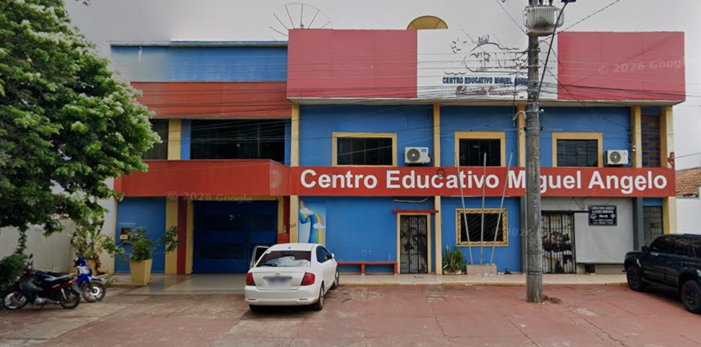

Começar
Conheça a Educação Infantil e converse com a escola sobre a rotina e as turmas para as crianças.
CEMA · CENTRO EDUCATIVO MIGUEL ANGELO
Da Educação Infantil à EJA, conheça os caminhos de ensino do CEMA em Ponta Porã.
AQUI COMEÇAM GRANDES CONQUISTAS
2027
Venha fazer parte da nossa família. Educação com amor, respeito e valores!
MATRÍCULAS COM
Até 12 de dezembro
Fale com a escola para consultar vagas, valores e condições do desconto para 2027.
Consultar matrícula 2027 CEMA · Centro Educativo Miguel Angelo01 / A ESCOLA
CEMA
Centro Educativo Miguel Angelo
O CEMA atende Educação Infantil, Ensino Fundamental e Educação de Jovens e Adultos (EJA) em Ponta Porã, MS.
Estamos na Rua Alexandre Gusmão, 241. Se você está procurando uma escola, quer conhecer as etapas de ensino ou deseja retomar os estudos, este é o lugar para começar a conversa.
Pelo WhatsApp, você pode perguntar sobre turmas, rotina, proposta pedagógica e matrícula. Para conhecer a escola pessoalmente, consulte a disponibilidade de uma visita.
Quero conhecer a escolaUM POUQUINHO DO CEMA

NOSSA PROPOSTA DE ENSINO
Da Educação Infantil à Educação de Jovens e Adultos, o CEMA reúne caminhos para iniciar, continuar ou retomar a trajetória escolar.
Conheça a Educação Infantil e converse com a escola sobre a rotina e as turmas para as crianças.
Consulte as séries do Ensino Fundamental e as orientações para o próximo passo do estudante.
Saiba mais sobre a EJA, suas etapas e as condições para voltar a estudar.
02 / ETAPAS DE ENSINO
Conheça as etapas atendidas pelo CEMA e converse com a escola para consultar turmas e horários.
OS PRIMEIROS PASSOS
Uma etapa importante no início da trajetória escolar. Converse com a escola sobre as turmas, a rotina e as orientações para a matrícula das crianças.
Saber mais sobre o InfantilA TRAJETÓRIA CONTINUA
O próximo passo na formação escolar. Consulte quais séries são atendidas, como funciona a rotina e a disponibilidade de vagas para o estudante.
Saber mais sobre o FundamentalUM NOVO CAPÍTULO
Educação de Jovens e Adultos, para quem busca retomar a trajetória escolar. Pergunte sobre as etapas oferecidas e as condições de ingresso.
Saber mais sobre a EJA03 / MATRÍCULAS
Quer estudar no CEMA ou matricular seu filho? O contato começa direto no WhatsApp, sem formulário ou cadastro neste site.
Conversar sobre matrículaInforme a etapa ou série de interesse. Se a matrícula for para uma criança, mencione a idade para receber a orientação adequada.
Pergunte sobre vagas, horários, documentos, valores e condições de matrícula. Essas informações são confirmadas no atendimento.
A escola orientará os próximos passos para realizar a matrícula e, se desejar, como consultar uma visita.
O contato pelo WhatsApp não garante uma vaga. A matrícula depende da confirmação e das orientações da escola.
04 / DÚVIDAS FREQUENTES
Algumas orientações para facilitar seu primeiro contato.
O CEMA atende Educação Infantil, Ensino Fundamental e EJA (Educação de Jovens e Adultos). Consulte diretamente a escola para saber quais turmas e séries estão disponíveis.
Clique em um dos botões de WhatsApp deste site. Uma conversa será aberta com o número (67) 98417-7857. Você pode revisar a mensagem antes de enviá-la.
A documentação pode variar conforme a etapa de ensino e a situação do estudante. Solicite a lista à escola antes de iniciar a matrícula.
De segunda a sexta-feira, das 7h às 18h30. A escola está fechada aos sábados e domingos. Esses são os horários de atendimento; os horários das aulas devem ser consultados diretamente com a escola.
Entre em contato pelo WhatsApp para consultar a possibilidade de uma visita e combinar um horário com a escola.
Na Rua Alexandre Gusmão, 241, em Ponta Porã, Mato Grosso do Sul. Na seção de contato, você encontra um link para buscar o endereço no mapa.
05 / CONTATO E LOCALIZAÇÃO
Escolha como falar com a escola. Para informações de matrícula, o contato é direto pelo WhatsApp.
CEMA · PONTA PORÃ